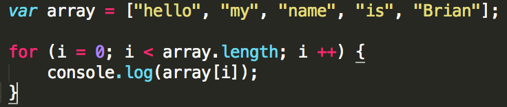
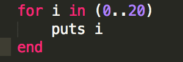
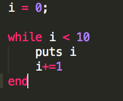
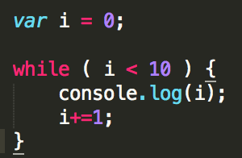

Path To Becoming a Dev
Brian Hyung Jo Park
Ruby loops vs Javascript loops!(WHILE AND FOR)
Ruby loops vs Javascript loops!(WHILE AND FOR)
August 2nd, 2015
Looping is a critical part of any programming language that allows the user to loop through large sets without writing a bunch of unecessary code. If you have studied any programming language, one of the first concepts you learn is the different types of loops you can use to manipulate data. Today, I'm going to be focusing in on the different types of loops for Javascript and Ruby!
If you are somewhat familiar with Javascript and Ruby, I'm sure you've seen keywords for both languages such as "for", "while", and "map". These are all different looping methods that both languages provide. There are subtle differences in syntax and functionality for each language. Below is an example of a "for" loop in Javascript.

The loop above is looping through the "array" array and console logging each element in the array. Within the for loop paranthesees, the variable "i", is pointing at the number you want the loop to begin with, which in this case is 0. We want to continue to loop UNTIL the variable "i" is less than the length of the "array"s length. We also want to be able to increment this loop by one (i++ means we want to counter to go up by one). The values within the "()" allows the programmer to set conditionals so that it can loop anyway you want it! If we wanted to start the loop at a value of 3, we can just write i = 3. If we wanted to increment the counter by 2, we can write i + 2. Using this information, we can manipulate data sets so that we can get the desired result and loop through information without writing a bunch of lines of code!
For reasons unknown to myself, for loops in Ruby are highly discouraged. I'll show you a quick example of a for loop in Ruby.

The above loop will puts the numbers 1 through 20 inclusive to the screen. The keywords you can focus in on is "for" and "in". The "i" in this loop is pointing to the element it is currently at. You can put any variable name besides "i". It is not the standard keyword in a for loop!!
The other popular loops for both languages are the "while loops". Below is an example of a while loop in Javascript and Ruby.


The above examples shows the difference in while loops for Javascript and Ruby.
Besides very subtle syntax differences, the concept is almost the same. In both languages, they define a variable outside of the while block, and calls for the loop to keep looping WHILE the variable "i" is less than 10. Within the body of both loops, "i" is incremented by 1. Both loops will print out 1 through 9.
There are many more ways to loop in both languages but these are two of the main methods you will be seeing. Will cover more methods as we keep learning! Till next week!